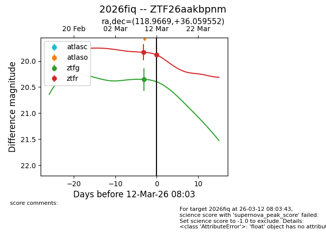
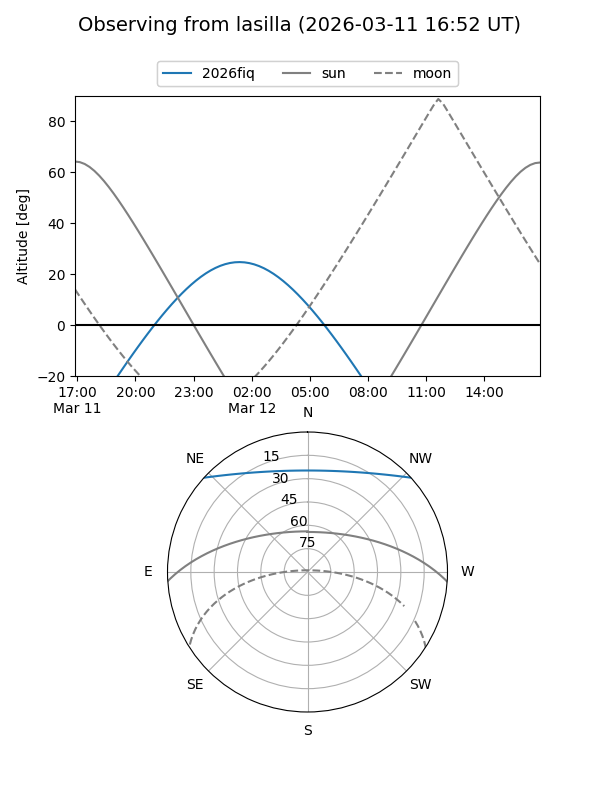
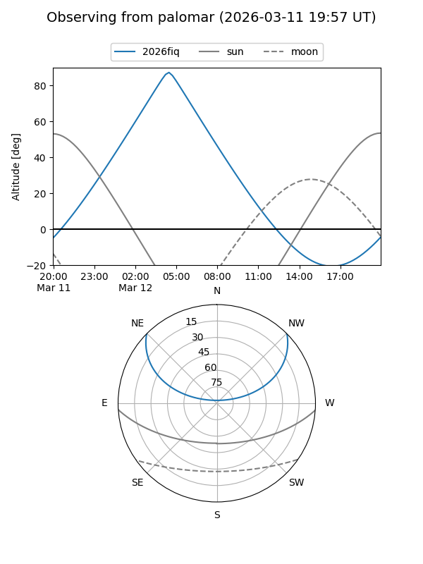
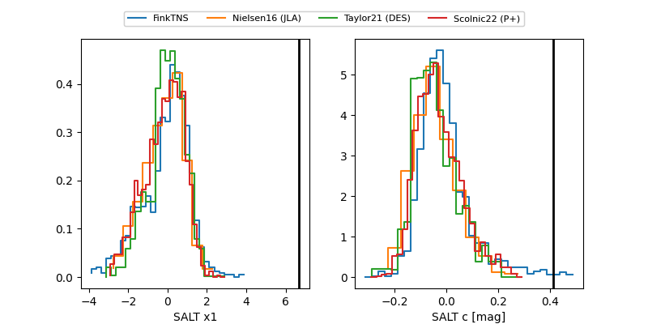

2026fiq
Target 2026fiq at 2026-03-12 08:05
Aliases and brokers:
FINK: link
Lasair: link
ALeRCE: link
TNS: link
YSE: link
alt names
ZTF26aakbpnm (ztf,fink_ztf)
2026fiq (tns,yse)
Coordinates:
equatorial (ra, dec) = 118.9669,+36.05955
equatorial (HMS+DMS) = 07:55:52.05,+36:03:34.39
galactic (l, b) = (184.4375,+27.90540)
Flags:
Photometry:
last ztfg=20.35, ztfr=19.88
1 ztfg, 2 ztfr detections
Lightcurve

Visibility


Additional plots
